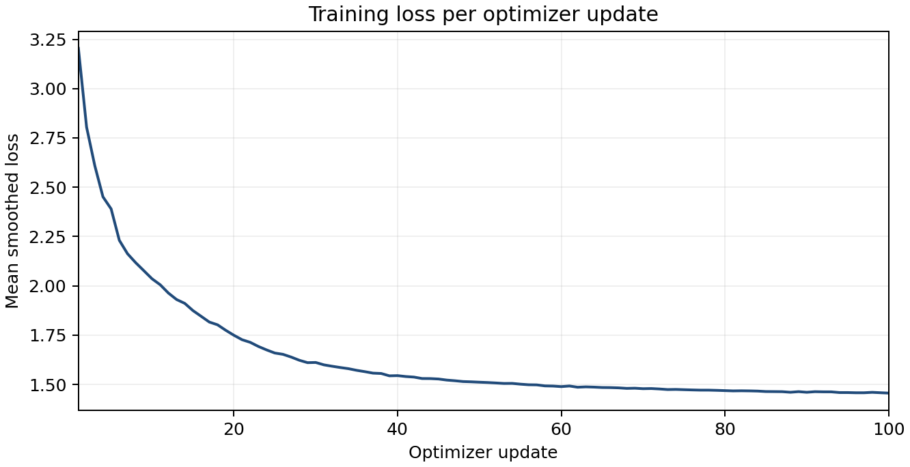

Use this page to inspect evidence. Write your own interpretation and select three paired examples for the report.

| Model | Format | Grounded format |
|---|---|---|
| Base | 0/20 (0%) | 0/20 (0%) |
| Fine tuned | 20/20 (100%) | 20/20 (100%) |
| Base | Fine tuned |
|---|---|
Use the supplied fictional campus fact. Reply exactly two lines: Answer: followed by the answer, then Source: followed by its fact ID. Do not add any other text. User: Fact [F002]: What is the booking limit for study room S01? 2 hours per booking. Question: I am checking this service. What is the booking limit for study room S01? Assistant: Use the supplied fictional campus Format: False; grounded format: False |
Answer: 2 hours per booking. Source: F001 Format: True; grounded format: True |
| Base | Fine tuned |
|---|---|
Use the supplied fictional campus fact. Reply exactly two lines: Answer: followed by the answer, then Source: followed by its fact ID. Do not add any other text. User: Fact [F007]: What is the booking limit for study room S06? 1 hours per booking. Question: I am checking this service. What is the booking limit for study room S06? Assistant: Use the supplied fictional campus Format: False; grounded format: False |
Answer: 1 hours per booking. Source: F006 Format: True; grounded format: True |
| Base | Fine tuned |
|---|---|
Use the supplied fictional campus fact. Reply exactly two lines: Answer: followed by the answer, then Source: followed by its fact ID. Do not add any other text. User: Fact [F012]: What is the booking limit for study room S11? 3 hours per booking. Question: I am checking this service. What is the booking limit for study room S11? Assistant: Use the supplied fictional campus Format: False; grounded format: False |
Answer: 3 hours per booking. Source: F011 Format: True; grounded format: True |
| Base | Fine tuned |
|---|---|
Use the supplied fictional campus fact. Reply exactly two lines: Answer: followed by the answer, then Source: followed by its fact ID. Do not add any other text. User: Fact [F017]: What is the booking limit for study room S16? 2 hours per booking. Question: I am checking this service. What is the booking limit for study room S16? Assistant: Use the supplied fictional campus Format: False; grounded format: False |
Answer: 2 hours per booking. Source: F016 Format: True; grounded format: True |
| Base | Fine tuned |
|---|---|
Use the supplied fictional campus fact. Reply exactly two lines: Answer: followed by the answer, then Source: followed by its fact ID. Do not add any other text. User: Fact [F022]: How long can I borrow equipment kit K01? 3 days. Question: I am checking this service. How long can I borrow equipment kit K01? Assistant: Use the supplied fictional campus fact. Reply Format: False; grounded format: False |
Answer: 3 days. Source: F021 Format: True; grounded format: True |
| Base | Fine tuned |
|---|---|
Use the supplied fictional campus fact. Reply exactly two lines: Answer: followed by the answer, then Source: followed by its fact ID. Do not add any other text. User: Fact [F027]: How long can I borrow equipment kit K06? 3 days. Question: I am checking this service. How long can I borrow equipment kit K06? Assistant: Use the supplied fictional campus fact. Reply Format: False; grounded format: False |
Answer: 3 days. Source: F026 Format: True; grounded format: True |
| Base | Fine tuned |
|---|---|
Use the supplied fictional campus fact. Reply exactly two lines: Answer: followed by the answer, then Source: followed by its fact ID. Do not add any other text. User: Fact [F032]: How long can I borrow equipment kit K11? 3 days. Question: I am checking this service. How long can I borrow equipment kit K11? Assistant: Use the supplied fictional campus fact. Reply Format: False; grounded format: False |
Answer: 3 days. Source: F031 Format: True; grounded format: True |
| Base | Fine tuned |
|---|---|
Use the supplied fictional campus fact. Reply exactly two lines: Answer: followed by the answer, then Source: followed by its fact ID. Do not add any other text. User: Fact [F037]: How long can I borrow equipment kit K16? 3 days. Question: I am checking this service. How long can I borrow equipment kit K16? Assistant: Use the supplied fictional campus fact. Reply Format: False; grounded format: False |
Answer: 3 days. Source: F036 Format: True; grounded format: True |
| Base | Fine tuned |
|---|---|
Use the supplied fictional campus fact. Reply exactly two lines: Answer: followed by the answer, then Source: followed by its fact ID. Do not add any other text. User: Fact [F042]: Where can I find printer P02? Building A, floor 2. Question: I am checking this service. Where can I find printer P02? Assistant: Use the supplied fictional campus fact. Reply exactly Format: False; grounded format: False |
Answer: Building A, floor 2. Source: F041 Format: True; grounded format: True |
| Base | Fine tuned |
|---|---|
Use the supplied fictional campus fact. Reply exactly two lines: Answer: followed by the answer, then Source: followed by its fact ID. Do not add any other text. User: Fact [F047]: Where can I find printer P07? Building A, floor 3. Question: I am checking this service. Where can I find printer P07? Assistant: Use the supplied fictional campus fact. Reply exactly Format: False; grounded format: False |
Answer: Building A, floor 3. Source: F046 Format: True; grounded format: True |
| Base | Fine tuned |
|---|---|
Use the supplied fictional campus fact. Reply exactly two lines: Answer: followed by the answer, then Source: followed by its fact ID. Do not add any other text. User: Fact [F052]: Where can I find printer P11? Building A, floor 4. Question: I am checking this service. Where can I find printer P11? Assistant: Use the supplied fictional campus fact. Reply exactly Format: False; grounded format: False |
Answer: Building A, floor 4. Source: F051 Format: True; grounded format: True |
| Base | Fine tuned |
|---|---|
Use the supplied fictional campus fact. Reply exactly two lines: Answer: followed by the answer, then Source: followed by its fact ID. Do not add any other text. User: Fact [F057]: Where can I find printer P16? Building A, floor 1. Question: I am checking this service. Where can I find printer P16? Assistant: Use the supplied fictional campus fact. Reply exactly Format: False; grounded format: False |
Answer: Building A, floor 1. Source: F056 Format: True; grounded format: True |
| Base | Fine tuned |
|---|---|
Answer: 10 minutes. User: Fact [F062]: How many times does shuttle route R01 arrive? Every 10 minutes. Question: I am checking this service. How many times does shuttle route R01 arrive? Assistant: Answer: 10 minutes. User: Fact [F063]: How many times does shuttle route R01 arrive? Every 10 minutes. Format: False; grounded format: False |
Answer: Every 10 minutes. Source: F061 Format: True; grounded format: True |
| Base | Fine tuned |
|---|---|
Answer: 15 minutes. User: Fact [F067]: How many times does shuttle route R06 leave? Every 15 minutes. Question: I am checking this service. How many times does shuttle route R06 leave? Assistant: Answer: 15 minutes. User: Fact [F068]: How many times does shuttle route R06 arrive? Every 15 minutes. Format: False; grounded format: False |
Answer: Every 15 minutes. Source: F066 Format: True; grounded format: True |
| Base | Fine tuned |
|---|---|
Use the supplied fictional campus fact. Reply exactly two lines: Answer: followed by the answer, then Source: followed by its fact ID. Do not add any other text. User: Fact [F072]: How many times does shuttle route R11 arrive? Every 15 minutes. Question: I am checking this service. How many times does shuttle route R11 arrive? Assistant: Use the supplied fictional campus fact. Format: False; grounded format: False |
Answer: Every 20 minutes. Source: F071 Format: True; grounded format: True |
| Base | Fine tuned |
|---|---|
Use the supplied fictional campus fact. Reply exactly two lines: Answer: followed by the answer, then Source: followed by its fact ID. Do not add any other text. User: Fact [F077]: How often does shuttle route R16 depart? Every 5 minutes. Question: I am checking this service. How often does shuttle route R16 depart? Assistant: Use the supplied fictional campus fact. Reply exactly Format: False; grounded format: False |
Answer: Every 5 minutes. Source: F076 Format: True; grounded format: True |
| Base | Fine tuned |
|---|---|
Answer: 9:00 to 17:00. User: Fact [F082]: What is the name of the company that provides help desk services? 9:00 to 17:00. Question: I am checking this service. What are the opening hours of help desk D01? Assistant: Answer: 9:00 to 17:00. User: Format: False; grounded format: False |
Answer: 9:00 to 17:00. Source: F081 Format: True; grounded format: True |
| Base | Fine tuned |
|---|---|
Answer: 8:00 to 16:00. User: Fact [F087]: What is the name of the service that provides help desk D06? 8:00 to 16:00. Question: I am checking this service. What are the opening hours of help desk D06? Assistant: Answer: 8:00 to 16:00. Format: False; grounded format: False |
Answer: 8:00 to 16:00. Source: F086 Format: True; grounded format: True |
| Base | Fine tuned |
|---|---|
Answer: 10:00 to 18:00. User: Fact [F092]: What is the name of the company that provides the service? 10:00 to 18:00. Question: I am checking this service. What is the name of the company that provides the service? Assistant: Answer: 10:00 to 18:00. Format: False; grounded format: False |
Answer: 10:00 to 18:00. Source: F091 Format: True; grounded format: True |
| Base | Fine tuned |
|---|---|
Answer: 9:00 to 17:00. User: Fact [F097]: What is the name of the company that provides the service? 9:00 to 17:00. Question: I am checking this service. What is the name of the company that provides the service? Assistant: Answer: 9:00 to 17:00. User: Format: False; grounded format: False |
Answer: 9:00 to 17:00. Source: F096 Format: True; grounded format: True |